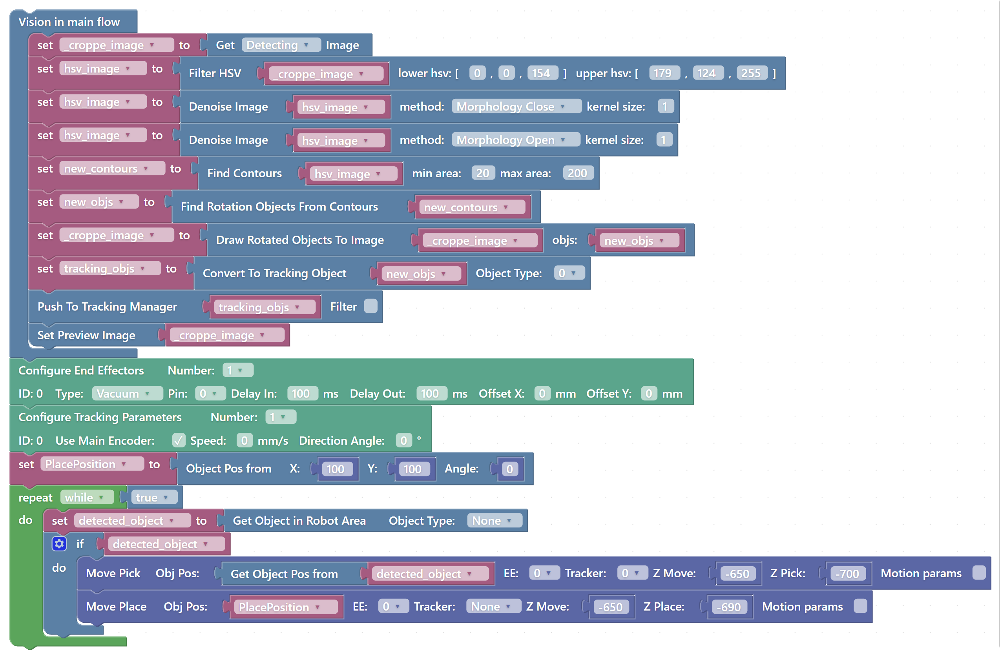
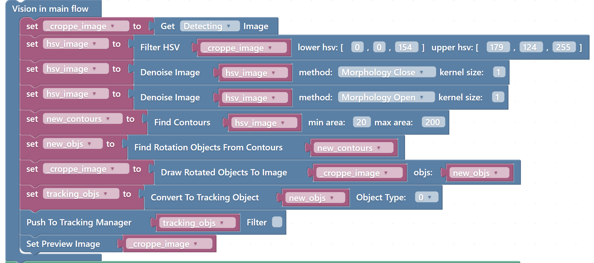
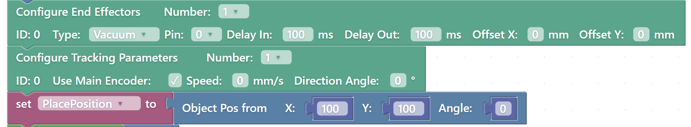
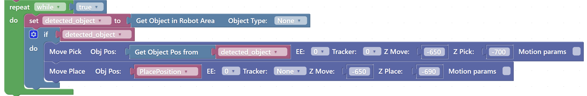

Blockly example — Color filtering + pick & place¶
Movement example · HSV + encoder
Detect objects by color, pick them from a moving conveyor, and place them at a fixed destination. This example combines the image-processing pipeline and the picking loop in one saved task. Keep Vision AI disabled; no trained AI model is needed.
Complete System Setup and the appropriate conveyor Calibration, including encoder tracking. First test the vision-only Color filtering example until each object has one stable detection and an empty belt produces none. Stop that test task before using the combined program.
Prepare color detection¶
Open Settings → System → Vision AI Settings. Set both the main Vision AI switch and the System Template Matching switch to Disabled, then click Save System and wait for confirmation.

Use the HSV bounds, contour limits, and camera setup that worked in your vision-only test. The combined program must use that same detection pipeline so it supplies the same objects to tracking.
Block program¶

Open Programs. If Docs_ColorPickPlace_Draft is in Saved Tasks, click its name to edit it. Otherwise start from your tested color-filtering program and add the configuration blocks and picking loop shown above. Save your completed version under your own name.
The program has two parts. Put the image-processing blocks inside Vision in main flow. Connect the tool configuration, tracking configuration, PlacePosition assignment, and movement loop after that wrapper, outside its image-processing body.
Image processing¶

The camera pipeline reads Get Detecting Image, applies Filter HSV and the two Denoise Image blocks, finds contours, and converts them to rotated objects. Use Draw Rotated Objects To Image and Set Preview Image to display the result. The color-filtering example explains each variable and connection.
Pass new_objs through Convert To Tracking Object with Object Type 0. Store the result in tracking_objs and connect that variable to Push To Tracking Manager. These two blocks make detections available to the picking loop; drawing outlines alone does not supply objects for pickup.
The captured draft uses lower HSV [0,0,154] and upper HSV [179,124,255], selecting bright pixels with low saturation. Its contour size limits are 20–200 pixels on both rotated bounding-box dimensions, and both morphology kernels are 1. Use your tested settings rather than copying these values for a different object or background. See Verify color detection for detection adjustments.
Tool, tracking, and initialization¶

Configure End Effectors defines tool 0: a vacuum tool on pin 0, with 100 ms grip/release delays and zero X/Y offsets in the screenshot. Set the pin, delays, and offsets for your installed tool. Select that tool ID as EE on both Move Pick and Move Place.
Configure Tracking Parameters defines tracker 0 with Use Main Encoder selected and direction angle 0°. Match the direction to your calibrated conveyor. With Use Main Encoder selected, the encoder supplies the conveyor movement; the displayed Speed value is not a command to run the conveyor.
The next block assigns PlacePosition = [100, 100, 0] using Object Pos from. This defines the fixed placement X, Y, and Angle.
Home the robot and set motion parameters before the first test. To include this preparation in the program, add Go Home and Set Motion Params from Robot Control → Movement before the repeat loop. Enter F, A, J, S, and E once; they continue to apply to later movements until changed.
Picking loop¶

Inside repeat while true, set detected_object to Get Object in Robot Area. Select Object Type 0 to retrieve the objects produced by this pipeline. The screenshot shows None, which accepts any available type.
The condition if detected_object means “an object was found.” Keep the pick and place actions inside this condition so an empty lookup skips movement.
| Input | Value shown |
|---|---|
| Move Pick → Obj Pos | Get Object Pos from detected_object, as shown. |
| Move Pick → EE / Tracker | EE 0, Tracker 0 for encoder-tracked pickup. |
| Move Pick → Z Move / Z Pick | -650 / -700: transfer and pickup heights. |
| Move Place → Obj Pos | PlacePosition, assigned [100, 100, 0] before the loop. |
| Move Place → EE / Tracker | EE 0 to release the same tool; Tracker None for the fixed destination. |
| Move Place → Z Move / Z Place | -650 / -690: transfer and release heights. |
Measure the heights and destination for your installation before replacing these values. Use number blocks from Math for height inputs. To define PlacePosition, create the variable under Variables, connect Vision → Objects → Object Pos from to its set block, and fill X, Y, and Angle. Connect a PlacePosition variable block to Move Place → Obj Pos. This position block does not enable or require AI. See Fill an empty input and Pick & Place parameters for the inputs and height meanings.
After placement, the loop requests another object. If no object is available, it skips the movement branch and tries again.
Save and test the combined task¶
- With the tested color settings copied and the movement values adapted to your installation, click Check program and resolve the reported issues. Save under your own name, such as
My_ColorPickPlace, and wait for confirmation. Use Update when editing an existing task. - Stop the vision-only color task and any other movement task for this robot. The combined task supplies its own detections and movement; run this task alone for the test. Keep Vision AI disabled and Auto Start off while developing it.
- Home the robot and confirm the motion settings first. In Saved Tasks, click the green triangular play button beside your combined task. Select the intended robot in Select Target Robots, then click Run Task when ready. The task can begin picking as soon as an object becomes available.
- Open the camera preview from Dashboard. At a low conveyor test speed, introduce one object and observe its detection, pickup, transfer, and release. Then test an empty belt: the loop should skip movement when no object is returned.
The illustrated run controls show the task play button, robot selection, and stop behavior. Stop the task before editing detection or movement settings, then Check program, Update, and repeat the test.
If outlines appear but the robot never picks, check Push To Tracking Manager, Object Type, the Robot Pick Area, and the selected tracker. If the pickup error changes with conveyor speed, recheck encoder tracking and calibration. Correct unstable or false detections in the vision-only test before resuming the combined movement task.